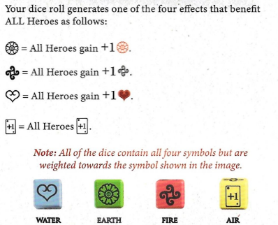

REGRAS DA CAIXA 4
OBJETIVO
Como nas Caixas anteriores, derrote todos os Adversários e complete todos os Objetivos antes que a Nação do Fogo chegue ao final do Caminho de Rastreamento.
COMPONENTES DA CAIXA 4
26 CARTAS DE APOIO (Geral, Ar, Água, Terra)
3 CARTAS DE RECOMPENSA
1 NOVA CARTA DE HERÓI TOPH
8 CARTAS DA NAÇÃO DO FOGO
3 CARTAS DE ADVERSÁRIO
6 CARTAS DE OBJETIVO
4 DADOS DE ELEMENTO
2 CARTAS DE CAMINHO DE RASTREAMENTO
10 NOVAS CARTAS DE APOIO INICIAIS DO HERÓI TOPH
CONFIGURAÇÃO DA CAIXA 4
Nesta parte da história, os Dobradores de Areia capturaram Appa e ele está perdido.
Remova as cartas Iniciais de Appa, incluindo Momo e sua carta de Herói, do jogo. Felizmente, Toph Beifong se juntou à Equipe Avatar. Os jogadores agora podem escolher jogar como Toph. Toph começa cada jogo com Dobra de Terra.
Antes de configurar a Caixa 4, remova quaisquer cartas das Caixas anteriores que não sejam transferidas para a Caixa 4. Isso inclui todas as cartas Iniciais de Appa, Longshot, Smellerbee, Sapo Congelado, Xin Fu e Yu, Rei Bumi, Madame Wu e Meng, Arnook, Chong, Máscara do Dia do Avatar e todas as cartas de Objetivo da Caixa 3.
Substitua as cartas de Rastreamento das Caixas 1 a 3 pelas novas cartas de Caminho de Rastreamento mais desafiadoras incluídas nesta caixa.
Caso contrário, siga a mesma configuração da Caixa 3, incluindo revelar 2 cartas de Nação do Fogo.
Certifique-se de ter separado as cartas de Dobra das cartas de Apoio Gerais e colocado todas em suas pilhas apropriadas antes de embaralhar.
Lembre-se: NÃO EMBARALHE as cartas de Objetivo e Recompensa. Coloque a pilha no Tabuleiro de Jogo e revele o Objetivo 4.1 "ULTRAPASSAR A MÁQUINA MISTERIOSA".
Para as cartas de Apoio, Adversários e Nação do Fogo, adicione as novas cartas da Caixa 4 às cartas restantes das Caixas 1 a 3 antes de embaralhar.
Página 6:
PREPARE SEU HERÓI
A configuração do Herói é a mesma da Caixa 3. Escolha um Herói e pegue a carta de Habilidade daquele Herói e o baralho de 10 cartas Iniciais junto com quaisquer cartas de Recompensa das Caixas 1 a 3 que também sejam cartas Iniciais para seu Herói, conforme listado abaixo.
Aang - 10 cartas Iniciais Originais mais Estado Avatar
Sokka - 10 cartas Iniciais Originais mais Suki e Espírito da Lua Yue
Katara - 10 cartas Iniciais Originais mais Pergaminho de Dobra de Água e Haru
Toph - 10 cartas Iniciais
Você NÃO começa o jogo com nenhuma das outras cartas de Apoio que você adquiriu ao jogar a Caixa 3. Essas cartas devem ter sido devolvidas aos seus baralhos de suprimentos e embaralhadas durante a configuração.
Como nas primeiras 3 Caixas, embaralhe e empilhe suas cartas de Herói Inicial com a face para baixo e, em seguida, compre 5 cartas.
Além das mudanças observadas acima, a Jogabilidade e as Condições de Fim de Jogo são as mesmas das Caixas 1, 2 e 3.
DADOS DE ELEMENTO
Existem quatro dados de Elemento codificados por cores, um para cada Elemento. Algumas cartas de Apoio e Recompensas permitem que você role um dado específico, conforme indicado pelos ícones de dados codificados por cores.
Sua rolagem de dados gera um dos quatro efeitos que beneficiam TODOS os Heróis da seguinte forma:

" Nota: Todos os dados contêm todos os quatro símbolos, mas são ponderados para o símbolo exibido na imagem"
EXEMPLO
Adaptar-se como a Água instrui você a ganhar 1 [símbolo de coração] e 1 [símbolo de energia] e Rolar o Dado de Elemento Água.